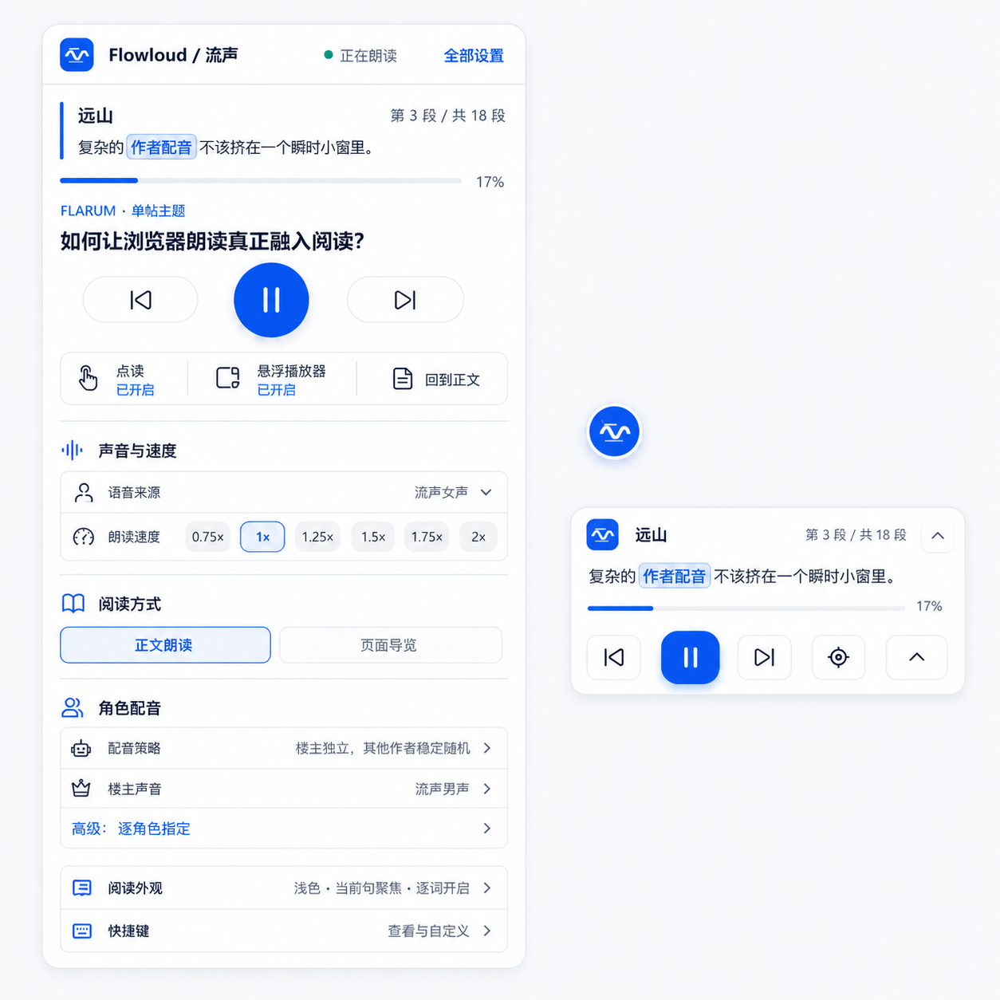

已批准目标图

保持蓝白中性视觉、固定播放器与高频快捷操作。
当前 Popup

声音、阅读、配音、更多原位切换；当前页完整展示且不使用内部滚动。
当前 Storybook 悬浮播放器

单一收起入口；五个播放控制保持 44px 可点击区域。
真实网页运行状态

生产版播放器与 Storybook 的尺寸、结构和高亮状态一致。

保持蓝白中性视觉、固定播放器与高频快捷操作。
声音、阅读、配音、更多原位切换；当前页完整展示且不使用内部滚动。
单一收起入口；五个播放控制保持 44px 可点击区域。
生产版播放器与 Storybook 的尺寸、结构和高亮状态一致。